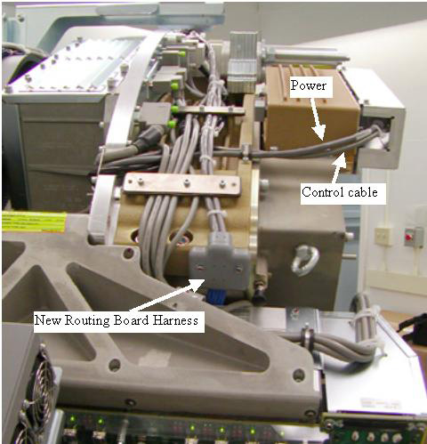
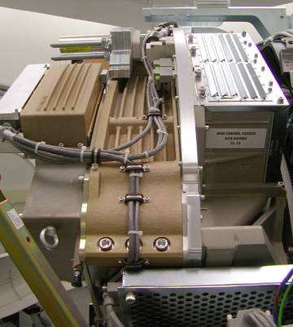

The routing harness is secured on the 48V power side of the detector by 2 screws through the plastic block shown in Illustration 4. On the ORP side there are 2 cable clamps screwed into the side to fasten the cable.
Use the two screws (46-328417P6) and two washers (46-328430P2) to secure the routing board cable large grey block to the 48V power supply side of the detector chassis. This block is pointed to in Illustration 4 by the arrow labeled “New Routing board harness”.
Illustration 4: New Cabling Left Side

Illustration 5: New Cabling Right Side
